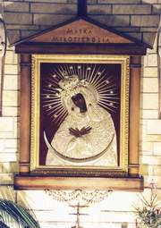

Obraz Matki Bożej Ostrobramskiej.
Na Jubileuszowej Mszy św. z okazji 100-lecia istnienia klasztoru Sióstr Wizytek w Jaśle, 12 października 2003r. w procesji z darami Maria Dzięglewicz ofiarowała wyhaftowany przez siebie obraz Matki Bożej Ostrobramskiej, jako symbol wileńskich początków jasielskiego zgromadzenia i wiekowego królowania Matki Miłosierdzia na klasztornej Górce.
Wierną kopię obrazu Pani Ostrobramskiej z Wilna ofiarowali Klasztorowi państwo Emilia i Michał Piotrowiczowie w 1909r. Michał Piotrowicz był bratem s. Józefy Ksawery, wizytki w Jaśle oraz bratem ks. Stanisława Piotrowicza, słynnego dziekana wileńskiego, bohatera z 1870r.
Michał Piotrowicz, który mieszkał na stałe w Wilnie, latem 1909r. odwiedził w Jaśle s. Józefę Ksawerę i podzielił się swoim pragnieniem obdarowania klasztoru kopią obrazu Matki Bożej Ostrobramskiej. Usłyszawszy tę wiadomość serca sióstr napełniła radość. W tym czasie w klasztorze jasielskim żyło pięć sióstr wileńskich i kilka sióstr, które pochodziły z Litwy, a wstąpiły do klasztoru w Wersalu.
Po powrocie do Wilna Michał Piotrowicz zamówił obraz u malarza Gobiatty. Szatę wykonał artystyczną robotą snycerską Charewicz, rzemieślnik- artysta. Fundator odwiedzał pracownię artysty śledząc powstawanie obrazu w czym "miał niemałą przyjemność", i tak się do niego przyzwyczaił, że po odesłaniu obrazu "jakby mu coś nadzwyczajnego brakowało".
Przed wysłaniem obrazu do Jasła został on uroczyście poświęcony 21 sierpnia 1909 r. o godz. 7.30 po mszy św. przed ołtarzem Matki Boskiej Świętomichalskiej w kościele pobernardyńskim w Wilnie przez ks. kan. Hretowicza. "Gazeta Wileńska" z dnia 22 sierpnia 1909 r. zamieściła krótki artykuł o tym wydarzeniu pt. "Rzewna pamiątka dla klasztoru". Czytamy w nim min. "Jest to obraz wykonany udatnie przez pana Gobiattę, ucznia Sylwanowicza, pokrywa go szata złocista
nader kunsztownie wycyzelowana przez pana Charewicza, bardzo zdolnego rzemieślnika - artystę. Tło wyłożone pluszem ciemno-szkarłatnym, ramy snycerskie, złożone, szerokie i efektowne. Obraz namalowany jest na płótnie z linoleum, nader trwałem".
W liście do s. Józefy Ksawery państwo Piotrowiczowie napisali: "Niech że ta ofiara szczera będzie dla Was prawdziwą otuchą, jak w tym tak i w przyszłym życiu."
Rozumiejąc i wczuwając się w ból i tęsknotę wygnania, polecili wygrawerować na półksiężycu pod obrazem napis:
"Siostry wygnanki ! W darze Wam składamy
Ten obraz z Litwy - Panny z Ostrej Bramy.
Niechaj, jaśniejąc w jasielskim kościele,
da Wam tu spokój, a w niebie wesele.
Michał i Emilia Piotrowiczowie Wilno, 25 lipca 1909 r."
Obraz przybył do klasztoru 6 października 1909r. Były trudności z uwolnieniem go z komory celnej w Krakowie, gdzie przetrzymywano go prawie przez cały miesiąc.
Pod datą 7 października 1909 r. siostra kronikarka zapisała: "Wreszcie w samą wilię MB Różańcowej wprowadzono po długich wyczekiwaniach MB Ostrobramską na 'Górkę'. Z dworca kolejowego towarzyszyła jej s. Justyna Dmochowska (stowarzyszona). Jak rzewnie witałyśmy Świętą Obronicielkę Ostrej Bramy Wileńskiej, Księżną Litewską! Ile łez potoczyło się na widok tak wiernie oddanej kopii. (...) Umieszczono tymczasem obraz w kapitularzu. Pielgrzymujemy często do Panny Świętej, 'co w Ostrej świeci Bramie', korzystając z tego, tymczasowego wśród nas
pobytu, póki nie stanie gotów ołtarz na przyjęcie Tej Ucieczki naszej i Ozdoby. Radość u nas ogólna. Cóż powiedzieć o uczuciach s. Józefy Ksawery". Matka Małgorzata Maria Węcławowicz w obecności całej wspólnoty oddała zgromadzenie w opiekę Matki Bożej. Siostry wraz z pensjonarkami długo śpiewały pieśni maryjne na głosy. Dopiero w lutym 1910r. obraz Matki Miłosierdzia przeniesiono do kościela i umieszczono w prezbiterium naprzeciw kraty chóru zakonnego, w ołtarzu przywiezionym z Wersalu. Odtąd Matka Boża w tym obrazie odbiera głęboką część zarówno od Sióstr Wizytek jak i mieszkańców Jasła. Wkrótce przy ołtarzu zaczęły pojawiać się pierwsze wota jako dowód otrzymywanych łask i czci wiernych. Kult Matki Miłosierdzia w Jaśle stopniowo się rozszerzał. Za staraniem s. Marii Anieli Skórzewskiej, w 1937r. zostało przeszczepione z Francji do Polski Arcybractwo Straży Honorowej Niepokalanego Serca Maryi i agregowane przy ołtarzu Matki Bożej Ostrobramskiej.
Wybuch II wojny światowej zapowiadał niepewny los zgromadzenia, które po latach wygnania i tułaczki osiadło w swoim nowowybudowanym klasztorze i pięknie się rozwijało. 15 września 1944r. na rozkaz władz okupacyjnych siostry wizytki wraz z mieszkańcami opuściły Jasło, które z góry przeznaczone było przez Niemców na zniszczenie. Schronienie otrzymały u zacnych gospodarzy w Sławęcinie, a następnie w Przysiekach i Siedliskach, oddalonych od Jasła o kilkanaście kilometrów. Niewiele rzeczy zdołały ze sobą zabrać, z zakrystii jedynie dwa kosze paramentów kościelnych. Matka Józefa Teresa Łaszewska czyniła starania o uratowanie obiektu klasztornego przed zniszczeniem. W ostatnim tygodniu listopada udała się do Harklowej, gdzie stacjonował generał. Przyjął ją grzecznie, ujęty jej poprawnym wyrażaniem się po niemiecku, ale nic nie obiecywał. Oszczędzenie kościoła i klasztoru nie leżało w jego kompetencji. A był to ważny punkt strategiczny. S. Maria Zofia Matuszewska z s. Marią Rozalią Piątek podjęły ryzyko przedostania się na Górkę, by coś uratować z kościoła. 28 listopada wybrały się tam wozem. Dojechały z Władysławem, pracownikiem klasztornym, do Niegłowic, gdzie trzeba było zaopatrzyć się w przepustkę, której komendant zdecydowanie odmówił. S. Maria Zofia,
władająca nieźle językiem niemieckim, nieustępliwie nalegała. Po kilku godzinach pertraktacji komendant zgodził się wysłać żołnierzy. Władysław z siostrami mieli czekać na ich powrót. S. Maria Zofia udzieliła żołnierzom szczegółowych wskazówek. Wrócili o zmierzchu. Między innymi przywieźli wycięte z ram obrazy Matki Bożej Ostrobramskiej i św. Małgorzaty Marii oraz piękny krucyfiks z kruchty kościelnej. Z powodu zbyt krótkiej drabiny nie mogli dostać się do obrazów świętych Założycieli i Nawiedzenia, na których najbardziej siostrom zależało.
2 stycznia 1945r. Siostry Wizytki przeniosły się do klasztoru Sióstr Bernardynek w Zakliczynie a obraz oddały na przechowanie do pewnej rodziny mieszkającej blisko dworca kolejowego w Gromniku. Pod koniec stycznia odebrały obraz Matki Bożej Ostrobramskiej z Gromnika i zawiozły do Biecza zostawiając go na plebani przy kościele parafialnym. W kwietniu tego samego roku wizytki jasielskie wróciły na gruzy swojego kościoła i klasztoru. Po odrestaurowaniu kaplicy na cmentarzu klasztornym w Jaśle siostry przywiozły obraz z Biecza i umieściły go w ołtarzu kaplicy. Było to przed pierwszym powojennym odpustem Najświętszego Serca Pana Jezusa, który w tym roku przypadał 8 czerwca. Jaślanie z wielką radością witali obraz Pani Ostrobramskiej ufając w Jej przemożne wstawiennictwo i opiekę. Przybywały nowe wota jako dowód rosnącej czci do Matki Miłosierdzia i wdzięczności za otrzymywane łaski. Klasztorna kaplica cmentarna była jedną z dwóch ocalałych kaplic w mieście, wszystkie kościoły uległy zniszczeniu. Prawie przez pięć lat Jaślanie przychodzili do niej na niedzielne msze św. Mimo wielkiego zubożenia miejscowa ludność złożyła ofiary na nową, pozłacaną ramę do obrazu Matki Bożej Ostrobramskiej.
W styczniu 1951r. przed uroczystością św. Franciszka Salezego obraz Matki Miłosierdzia został przeniesiony do będącego w surowym stanie kościoła klasztornego na 'Górce' i tymczasowo umieszczony w głównym ołtarzu. Po wykończeniu wnętrza i konsekracji kościoła, której dokonał 25 września 1966r. ks. bp Ignacy Tokarczuk, obraz został umieszczony w prezbiterium, w bocznej kaplicy św. Józefa z Dzieciątkiem, naprzeciw chóru klasztornego.
W sierpniu 1976 r. ks. Józef Mucha przez Triduum przygotowywał wiernych do wprowadzenia Nieustannej Nowenny do Matki Bożej Ostrobramskiej. Na uroczystość pierwszej nowenny 22 sierpnia 1976 r. wyniesiono obraz Matki Bożej Ostrobramskiej z bocznej kaplicy w prezbiterium i umieszczono w przygotowanym ołtarzu na balkonie, na frontowej fasadzie kościoła, gdzie w godzinach wieczornych została odprawiona Msza św. ku czci Niepokalanego Serca Maryi, a po niej pierwsza nowenna do Matki Bożej Ostrobramskiej. Czytano liczne prośby i podziękowania do Matki Miłosierdzia składane przez wiernych. Następnie na placu kościelnym odbyła się procesja z obrazem przy licznym udziale duchowieństwa i wiernych. Po procesji ustawiono obraz na przygotowanym małym ołtarzyku, przy kracie chórowej obok głównego ołtarza. Następnego dnia ks. proboszcz Antoni Bieszczad umieścił obraz Matki Bożej Ostrobramskiej na obecnym jego miejscu tj. na głównej ścianie w prezbiterium. Odtąd w każdą trzecią niedzielę miesiąca odprawiana jest Nieustanna Nowenna do Matki Bożej Ostrobramskiej, na którą chętnie przybywają wierni z całego Jasła. Prośby i podziękowania składane w formie pisemnej do odczytania podczas Nowenny są przepisywane do specjalnej księgi i stanowią dokumentację szerzącego się kultu maryjnego na 'Górce' oraz potwierdzeniem słusznego określenia jasielskiego obrazu Matki Bożej Ostrobramskiej jako łaskami słynącego.
W listopadzie 1979r. całe miasto obchodziło Jubileusz 70-lecia obecności obrazu Matki Miłosierdzia na klasztornej 'Górce' wyrażając swoją wdzięczność i miłość do Tej, co "w Ostrej świeci Bramie" i króluje w Jaśle otaczając je swoją opieką. W październiku 1979 r. ks. proboszcz oddał obraz do renowacji, której dokonano w Pracowni Konserwacji Zabytków w Krakowie. Prace konserwatorskie wykonała Ewa Gil odnawiając min. pozłacaną ramę obrazu i wymieniając tło.
Uroczystość jubileuszową poprzedziło Triduum przygotowawcze prowadzone przez o. Gracjana Bałysa, karmelitę bosego z Wrocławia. W czasie Triduum odbywała się peregrynacja obrazu Matki Bożej Ostrobramskiej po jasielskich parafiach.
Wyszła Matka Boża w swym pięknie odnowionym ostrobramskim obrazie, umieszczona na błękitnym tronie nawiedzić poszczególne kościoły jasielskie, w których zbierali się wierni z całego miasta, by oddać cześć Najlepszej Matce i Królowej Naszej. Peregrynacja miała następujący przebieg:
14 listopad - nawiedzenie kościoła OO. Franciszkanów pw. Św. Antoniego. W tym dniu modliły się szczególnie matki - kobiety jasielskie składając jako wotum wdzięczności Matce Bożej serce - symbol miłości.
15 listopad - nawiedzenie kościoła farnego pw. Wniebowzięcia NMP Zebrali się w nim na wspólną modlitwę szczególnie mężczyźni - ojcowie z całego Jasła składając jako wotum Matce Bożej złoty Krzyż - symbol naszej wiary.
16 listopad - nawiedzenie kościoła pw. św. Stanisława Bp. W tym dniu przed ostrobramskim obrazem zgromadziła się młodzież i dzieci jasielskie. Jako wotum złożyły Matce Bożej ryngraf - godło naszej Ojczyzny - białego orła na złotym tle.
17 listopad - obraz Matki Bożej Ostrobramskiej wrócił do kościoła Sióstr Wizytek. Na jego powitanie zagrały fanfary. Niesiony był pod niebieskim baldachimem przez delegacje poszczególnych stanów. Procesje z zapalonymi świecami utworzyła ogromna rzesza wiernych z Jasła i okolicy. W dniu uroczystego zakończenie jubileuszowej wędrówki Matki Miłosierdzia, przed Jej obrazem na 'Górce' modliły się szczególnie młode rodziny składając jako wotum nowy kielich do sprawowania Najświętszej Ofiary. Uznano, że z tej ofiary Chrystusa rodzina winna czerpać siły, aby wiarę w Boga i miłość do Matki Bożej przekazać
młodemu pokoleniu. Słowo Boże we wszystkich jasielskich kościołach głosił o Gracjan Bałys.
Uroczystości jubileuszowe zakończyły się w niedzielę 18 listopada. O godz. 10.30 została odprawiona Msza św. koncelebrowana na placu przed kościołem a po niej nastąpił akt osobistego oddania się Matce Najświętszej. O godz. 16-tej była odprawiona Nieustanna Nowenna do Matki Bożej Ostrobramskiej, w czasie której poświęcono sztandar, jako wotum wdzięczności i pamiątkę jubileuszu.
Po uroczystościach jubileuszowych obraz Matki Bożej Ostrobramskiej ponownie umieszczono w głównym ołtarzu. Widząc szerzący się kult Matki Miłosierdzia w Jej obrazie na 'Górce' Siostry Wizytki i ks. proboszcz Antoni Bieszczad dnia 10 lipca 1982 r. złożyli wniosek do Kurii Biskupiej w Przemyślu, aby dzień 16 listopada, święto Matki Bożej Ostrobramskiej, był dniem odpustu. Dekretem Kurii z dnia 11 sierpnia 1982 r. L: 1484/82 prośba ta została zatwierdzona.
Z okazji 50-lecia prowadzenia przez Siostry Wizytki dzieł modlitewnych: Adoracji Nocnej w Rodzinie i Arcybractwa Straży Honorowej Niepokalanego Serca Maryi 19 lipca 1987r. obraz Matki Bożej Ostrobramskiej jeszcze raz został zdjęty z głównej ściany prezbiterium i umieszczony w ołtarzu polowym przed wejściem do świątyni.
W pierwszej połowie listopada 1987r. z inicjatywy ks. proboszcza Jana Gibały zrobiono drewniane obramowanie obrazu Matki Bożej Ostrobramskiej na wzór obrazu wileńskiego. Dębową, patynowaną ramę zaprojektowali i wykonali J. Garlison i J. W. Piechocki w pracowni ramiarskiej w Kołaczycach.
"O Najłaskawsza nasza Królowo,
Coś Gród Wileński łaską broniła,
Gdy z Bramy Ostrej przybyłaś do Jasła,
Ratuj nas, ratuj o Królowo miła.
O Miłosierdzia, Matko i Pani,
My Twoi słudzy, Twoi poddani."
- śpiewamy podczas nowenny do Matki Bożej Ostrobramskiej ufając w Jej orędownictwo i opiekę nad nami w następnych stuleciach.
